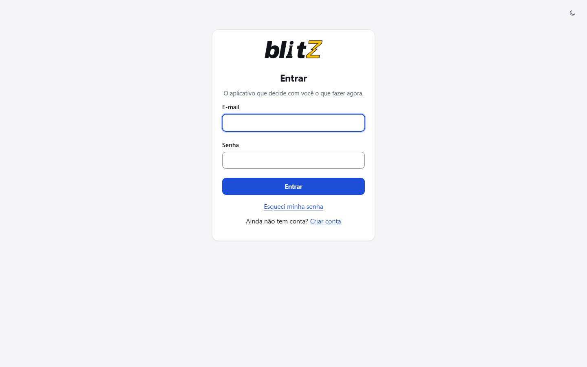
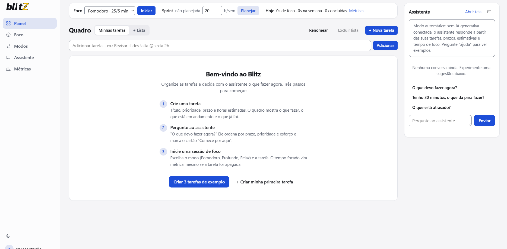
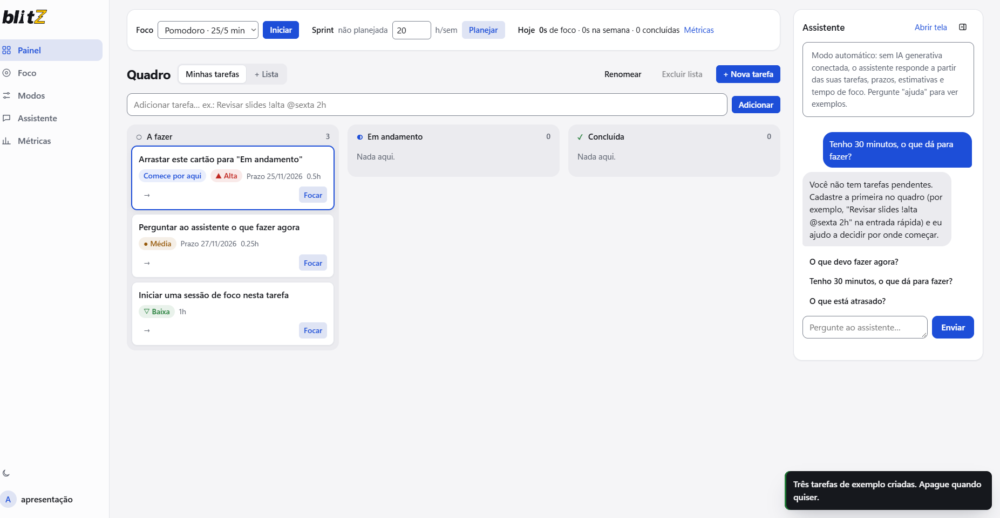
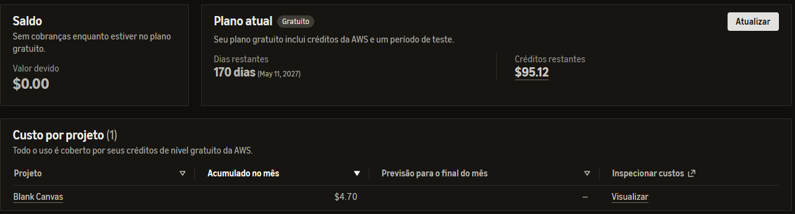
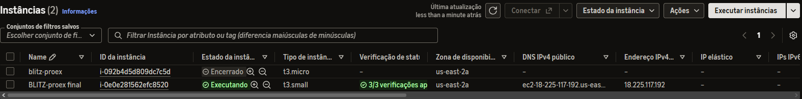
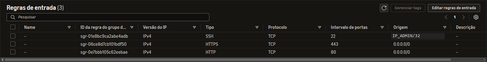

Infraestrutura de Servidores · Projeto Final “PROEX em Produção” · Relatório técnico · 25/11/2026
| Projeto de PROEX | Blitz: sistema de foco e produtividade |
|---|---|
| Integrantes | Luiz Henrique Marinello da Rosa · Vinicius Fagundes · Raphael Gomes Henke |
| Código | github.com/luizmarinello/blitz (aplicação no commit 8cd3680; scripts de infraestrutura em infra/aws/) |
| URL de demonstração | https://18-225-117-192.sslip.io (HTTP redireciona para HTTPS) |
| Instância | EC2 t3.small · Ubuntu Server 26.04.1 LTS · us-east-2 (Ohio) · EBS 20 GB |
Convenção deste relatório: segredos aparecem como VALOR_OCULTADO e IPs de visitantes como IP_OCULTADO. Horários das saídas de terminal estão em UTC (Brasília = UTC−3). As evidências completas, em texto, estão em docs/proex/evidencias/ no repositório.
Problema tratado. Quem trabalha ou estuda alterna entre um gestor de tarefas, que organiza mas não acompanha a execução, e um aplicativo de foco, que cronometra mas não conhece as tarefas. O Blitz une as duas coisas: a pessoa cadastra listas e tarefas com prioridade, prazo e horas estimadas, inicia sessões de foco ligadas a uma tarefa e conversa com um assistente que sugere o que fazer agora. O Blitz substituiu o projeto anterior de PROEX do grupo (sistema de coleta de lixo).
Funcionalidades implantadas e demonstráveis (todas atendidas pela EC2):
| Funcionalidade | O que o avaliador vê | Rota da API |
|---|---|---|
| 1. Cadastro com aceite e login | Criar conta (o aceite dos Termos é obrigatório e fica registrado com data e versão), entrar e sair | /api/auth/* |
| 2. Quadro de tarefas | Criar, editar, mover e concluir tarefas; os dados continuam lá depois de recarregar | /api/listas, /api/tarefas |
| 3. Sessão de foco | Escolher um modo (Pomodoro, Profundo, Relax ou personalizado), iniciar e encerrar; as métricas atualizam | /api/sessoes, /api/metricas |
| 4. Assistente | Perguntar “o que faço agora?” e receber a tarefa sugerida com o motivo | /api/ia/mensagem |

Figura 1. Tela de entrada do Blitz servida pela EC2 em https://18-225-117-192.sslip.io, acessada de fora da rede da instância.

Figura 2. Primeiro acesso de uma conta nova (“apresentação”): o quadro vazio explica os três passos e oferece tarefas de exemplo. À direita, o assistente em modo automático.

Figura 3. Depois de “Criar 3 tarefas de exemplo”, as tarefas foram gravadas no PostgreSQL da EC2 e aparecem no quadro (A fazer / Em andamento / Concluída), com prioridade, prazo e horas. A primeira recebeu a marca “Comece por aqui”, dada pela priorização do back-end. A resposta do assistente foi pedida antes da criação das tarefas, por isso diz que não há pendências.
| Camada | Tecnologia | Onde roda |
|---|---|---|
| Front-end | TypeScript + Vite (sem framework), build estático | Arquivos em /var/www/blitz, servidos pelo Nginx |
| Back-end | Java 21 (OpenJDK 21.0.13) + Spring Boot 3.5, um único .jar | Serviço systemd blitz, em 127.0.0.1:8080 |
| Banco de dados | PostgreSQL 18.6, esquema criado por migrações Flyway (V1 a V3) | Na própria EC2, só em 127.0.0.1:5432 |
| Servidor web | Nginx 1.28.3: arquivos estáticos + proxy reverso de /api/ | Portas 80 e 443 |
| HTTPS | Certificado Let's Encrypt emitido pelo Certbot; nome DNS gratuito do sslip.io | Renovação pelo certbot.timer |
| Serviço externo opcional | Google Gemini para o assistente. Desligado durante os testes, para economizar: sem a chave, responde o assistente local do próprio back-end, que prioriza as tarefas por regras (é o que aparece nas Figuras 2 e 3). Na apresentação, o Gemini será ligado e demonstrado funcionando | API do Google, chamada só pelo back-end; a chave fica em /etc/blitz/blitz.env, nunca no navegador |
Adaptações para a implantação (o código da aplicação não foi reescrito): o back-end passou a ler o endereço de escuta, a porta, o banco e as regras do cookie de variáveis de ambiente (SERVER_ADDRESS, PORT, DATABASE_*, COOKIE_*). O front foi compilado no modo aws (frontend/.env.aws), que chama a API pelo caminho relativo /api. Assim, front e API ficam na mesma origem: não há CORS e o cookie de sessão pode ser SameSite=Strict. O envio de e-mail (recuperação de senha) não foi configurado porque não há servidor SMTP. Sem ele, o link de redefinição só vai para o log do serviço.
Ligar o Gemini (feito por um integrante, sem expor a chave): preencher GEMINI_API_KEY=VALOR_OCULTADO em /etc/blitz/blitz.env com sudo nano e rodar sudo systemctl restart blitz. Para desligar, apagar o valor e reiniciar. O provedor recebe só título, prioridade, status, prazo e horas das tarefas: nenhum nome, e-mail ou identificador da conta (LGPD). Nos logs, a pessoa aparece apenas por um pseudônimo, e o texto das mensagens não vai para o log. Se o Gemini falhar ou atingir o limite de uso, o assistente local responde no lugar.
Figura 4. Caminho de uma requisição. Só o Nginx é alcançável da Internet; o back-end e o banco escutam apenas na interface local (127.0.0.1), por isso não precisam de regra no Security Group.
Caminho de uma requisição: (1) o navegador resolve 18-225-117-192.sslip.io para o IP público. (2) O Security Group libera a porta 443. (3) O Nginx encerra o TLS. (4) Se o caminho for / ou /assets/, o Nginx entrega o arquivo de /var/www/blitz. Se for /api/, repassa a 127.0.0.1:8080 com os cabeçalhos X-Forwarded-*. (5) O Spring valida o cookie de sessão e consulta o PostgreSQL local. Dependências fora da EC2: DNS do sslip.io e a autoridade Let's Encrypt (só na emissão e na renovação). A aplicação em si não depende de nenhum serviço externo.
| Item | Escolha | Justificativa |
|---|---|---|
| Região | us-east-2 (Ohio), zona us-east-2a | Região com o catálogo completo do Free Plan; o banco de produção do TCC já fica em Ohio |
| AMI / SO | Ubuntu Server 26.04.1 LTS (ami-0f441bd6af0596ef7), kernel 7.0.0-1018-aws, x86_64 | LTS suportada pela Canonical; tem Java 21, PostgreSQL 18 e Nginx nos repositórios oficiais |
| Tipo | t3.small (2 vCPU, 2 GB de RAM) | A JVM do Spring Boot com o PostgreSQL não cabe com folga em 1 GB. Medido em operação: 784 MiB usados e 1,1 GiB disponíveis |
| Armazenamento | 1 volume EBS de 20 GB (nvme0n1); 2,7 GB usados (15%) | Sistema, aplicação, banco e backups locais, com folga |
| Rede | VPC padrão, sub-rede pública, IPv4 público automático 18.225.117.192, IP privado 172.31.10.255 | Sem IP elástico, para não gerar custo extra. Consequência: stop/start troca o IP (ver seção 10) |
Conta e créditos (R02). Tentamos três cadastros com e-mail institucional da FAG, e nenhum ficou utilizável a tempo. Na primeira conta, a modalidade paga foi escolhida por engano no cadastro e ela ficou sem créditos; a conta foi encerrada. Na segunda, a AWS respondeu “You are not eligible for the free plan”. A terceira foi suspensa logo após o cadastro. Por isso, o ambiente foi criado numa conta Free Plan já existente de um integrante. No painel, essa conta mostrava saldo de US$ 95,12 com validade até 11/05/2027.

Figura 5. Faturamento em 24/11/2026: plano Gratuito, 170 dias restantes (até 11/05/2027), US$ 95,12 de créditos e US$ 0,00 devido. O consumo do mês, US$ 4,70, é coberto pelos créditos. O nome da conta foi recortado da captura.
Recursos que consomem crédito: horas da instância t3.small, o volume EBS de 20 GB, o IPv4 público e a transferência de dados de saída. A instância da Parte 1 da disciplina (blitz-proex, t3.micro) foi encerrada em 24/11/2026 para não consumir mais créditos. Assim, o único servidor ativo é o deste trabalho.

Figura 7. Console EC2: a instância BLITZ-proex final (i-0e0e281562efc8520, t3.small, us-east-2a) em execução, com as 3 verificações de status aprovadas e IPv4 público 18.225.117.192. A instância da Parte 1 aparece como encerrada.
Política de acesso. Cada integrante gera o próprio par de chaves no seu computador e entrega só a chave pública. O script infra/aws/criar-usuario.sh cria o usuário Linux, grava a chave em ~/.ssh/authorized_keys (pasta 700, arquivo 600) e, quando pedido, adiciona o usuário ao grupo sudo. A chave do par criado na AWS (usuário ubuntu) fica só no computador do responsável e serve de acesso de emergência. Nenhuma chave privada foi compartilhada, enviada ou versionada.
$ ssh -i ~/.ssh/blitz-luiz luiz@18.225.117.192 'whoami; id; sudo -n true && echo "sudo ok"' luiz uid=1001(luiz) gid=1001(luiz) groups=1001(luiz),4(adm),27(sudo),100(users) sudo ok $ sudo sshd -T | grep -Ei "^(permitrootlogin|passwordauthentication|pubkeyauthentication) " permitrootlogin no <- definido em /etc/ssh/sshd_config.d/10-sem-root.conf pubkeyauthentication yes passwordauthentication no
Login SSH com usuário pessoal, uso de sudo e configuração efetiva do SSH: root não entra remotamente e senha não é aceita, só chave.
| Conta Linux | Quem usa | Privilégio |
|---|---|---|
luiz | Luiz (administrador) | Grupos sudo e adm |
| vinicius · raphael | Vinicius e Raphael | a criar em 25/11 com as chaves públicas deles |
ubuntu | Acesso de emergência (chave da AWS) | Sudo |
blitz | Processo da aplicação | Conta de sistema, sem shell (nologin) e sem sudo |
postgres | Banco de dados | Só acessível localmente |
drwxr-x--- root blitz /etc/blitz -rw-r----- root blitz /etc/blitz/blitz.env drwxr-x--- blitz blitz /opt/blitz drwxr-xr-x root root /var/www/blitz drwxr-x--- root root /var/backups/blitz $ sudo -u ubuntu cat /etc/blitz/blitz.env cat: /etc/blitz/blitz.env: Permission denied $ ps -o user,pid,cmd -C java blitz 2292 /usr/bin/java -Xms128m -Xmx512m -jar /opt/blitz/blitz.jar
Permissões: o arquivo de segredos só pode ser lido pelo root e pelo grupo do serviço. Até um usuário com sudo precisa de sudo para lê-lo. A aplicação não roda como root.
O build é feito no computador do integrante, porque Maven e npm usam memória demais para uma máquina de 2 GB. Depois, o pacote é enviado por scp e instalado por um script idempotente: pode rodar de novo a cada versão sem apagar dados.
# No computador do integrante (Git Bash): EC2=18.225.117.192 CHAVE=~/.ssh/blitz-proex-final.pem USUARIO=ubuntu infra/aws/implantar.sh 1. ./mvnw package -> blitz.jar 2. npx vite build --mode aws -> front.tar.gz (API em caminho relativo) 3. scp para /tmp/blitz-deploy e ssh "sudo instalar.sh" # instalar.sh, na EC2: apt install openjdk-21-jre-headless postgresql nginx · cria o usuário de sistema blitz cria o banco e o usuário "blitz" com senha aleatória e grava /etc/blitz/blitz.env (640), só se ainda não existir instala /opt/blitz/blitz.jar e /var/www/blitz · instala e habilita blitz.service instala o site do Nginx, remove o site padrão, nginx -t, reload · testa /api/auth/saude
Unidade systemd (/etc/systemd/system/blitz.service):
[Unit] Description=Blitz - API (Java 21 / Spring Boot) After=network.target postgresql.service Wants=postgresql.service [Service] User=blitz Group=blitz WorkingDirectory=/opt/blitz EnvironmentFile=/etc/blitz/blitz.env ExecStart=/usr/bin/java -Xms128m -Xmx512m -jar /opt/blitz/blitz.jar Restart=on-failure RestartSec=5 SuccessExitStatus=143 NoNewPrivileges=true ProtectSystem=full PrivateTmp=true [Install] WantedBy=multi-user.target
Configuração do Nginx (/etc/nginx/sites-available/blitz, ativada por link em sites-enabled; o bloco 443 foi acrescentado pelo Certbot):
server {
listen 443 ssl; listen [::]:443 ssl; # managed by Certbot
server_name 18-225-117-192.sslip.io;
ssl_certificate /etc/letsencrypt/live/18-225-117-192.sslip.io/fullchain.pem; # chave privada: não reproduzida
root /var/www/blitz; index index.html;
add_header X-Content-Type-Options nosniff always; add_header X-Frame-Options DENY always;
client_max_body_size 1m; server_tokens off;
location /api/ {
proxy_pass http://127.0.0.1:8080;
proxy_set_header Host $host; proxy_set_header X-Real-IP $remote_addr;
proxy_set_header X-Forwarded-For $proxy_add_x_forwarded_for; proxy_set_header X-Forwarded-Proto $scheme;
}
location /assets/ { try_files $uri =404; expires 30d; }
location / { try_files $uri $uri/ /index.html; } # rotas do front (#/...) caem no index.html
}
server { # porta 80: só redireciona
listen 80; listen [::]:80; server_name _;
return 301 https://18-225-117-192.sslip.io$request_uri; # vale também para quem digita só o IP
}
$ sudo nginx -t
nginx: the configuration file /etc/nginx/nginx.conf syntax is ok
nginx: configuration file /etc/nginx/nginx.conf test is successful
Trecho resumido. O arquivo completo e o modelo das variáveis (blitz.env.exemplo, com segredos como VALOR_OCULTADO) estão em infra/aws/.
| Porta | Origem no Security Group | Quem escuta | Motivo |
|---|---|---|---|
| 22/TCP | IPs administrativos (/32) | sshd | Administração; só chave, sem root e sem senha |
| 80/TCP | 0.0.0.0/0 | Nginx | Só redireciona para HTTPS e responde à validação do Let's Encrypt |
| 443/TCP | 0.0.0.0/0 | Nginx | Acesso dos visitantes com TLS |
| 8080/TCP | sem regra | Java, só em 127.0.0.1 | Só o Nginx, na mesma máquina, fala com o back-end |
| 5432/TCP | sem regra | PostgreSQL, só em 127.0.0.1 | Banco nunca exposto |

Figura 6. Regras de entrada do Security Group launch-wizard-2, ligado à instância: SSH (22) aceito só de um IP administrativo /32, e HTTP (80) e HTTPS (443) abertos para visitantes. Não há regra para 8080 nem 5432. O IP do administrador foi substituído por IP_ADMIN. Para a apresentação, será acrescentada uma regra 22 com o IP da rede da FAG.
$ sudo ss -tlnp 0.0.0.0:22 sshd 0.0.0.0:80 nginx 0.0.0.0:443 nginx (e o mesmo em [::] para IPv6) 127.0.0.1:5432 postgres [::ffff:127.0.0.1]:8080 java (127.0.0.53/54:53 = DNS local do systemd)
Portas em escuta: as únicas abertas para fora são 22, 80 e 443. O firewall do Ubuntu (UFW) ficou desativado de propósito; o controle é feito pelo Security Group.
apt-get upgrade aplicado em 24/11/2026 (tzdata e python3-oauthlib). Um pacote (libsqlite3-0) está retido pela liberação em fases do Ubuntu. O unattended-upgrades está habilitado e aplica as correções de segurança todo dia./etc/blitz/blitz.env (640) e nunca entram no Git; o repositório tem apenas o modelo. Nenhum arquivo .pem, .env real ou dump de banco foi publicado.HttpOnly, Secure e SameSite=Strict. A API envia Strict-Transport-Security e o Nginx envia X-Frame-Options e nosniff.18-225-117-192.sslip.io, sem compra de domínio. O sslip.io resolve o nome para o IP embutido nele. O cadastro no Let's Encrypt foi feito sem e-mail (--register-unsafely-without-email), para não registrar dado pessoal.$ echo | openssl s_client -connect 18-225-117-192.sslip.io:443 2>/dev/null | openssl x509 -noout -issuer -subject -dates
issuer=C=US, O=Let's Encrypt, CN=YE1
subject=CN=18-225-117-192.sslip.io
notBefore=Nov 24 16:53:08 2026 GMT notAfter=Feb 22 16:53:07 2027 GMT
$ curl -s -o /dev/null -w "%{http_code} %{redirect_url}" http://18-225-117-192.sslip.io/
301 https://18-225-117-192.sslip.io/
$ sudo certbot renew --dry-run
Congratulations, all simulated renewals succeeded
$ systemctl list-timers certbot.timer -> próxima execução: 25/11/2026 06:30 UTC
HTTPS: certificado válido por 90 dias, HTTP redirecionado e teste de renovação aprovado. Diferença prática: em HTTP, senha e cookie trafegam legíveis por quem estiver no caminho; em HTTPS, vão cifrados, e o certificado prova que o servidor é mesmo o dono do nome.
sudo systemctl reboot às 17:47:38 UTC de 24/11/2026; acompanhar /api/auth/saude de fora e conferir os serviços ao reconectar.blitz.service iniciado às 17:47:58; API respondendo 200 de fora cerca de 30 s após o pedido. is-active = active ×3 e is-enabled = enabled ×3 (nginx, blitz, postgresql).WantedBy=multi-user.target). O After=postgresql.service garante que o back-end só sobe depois do banco.$ uptime 17:49:30 up 1 min, load average: 1.33, 0.46, 0.16 $ free -h Mem: total 1.9Gi used 748Mi free 945Mi available 1.1Gi Swap: 0B $ df -h / /dev/root 19G 2.7G usados 16G livres 15% $ ps aux --sort=-%mem | head -2 blitz 2292 0.9 18.8 ... 367852 KB /usr/bin/java -Xms128m -Xmx512m -jar /opt/blitz/blitz.jar $ top -bn1 %Cpu(s): 0.0 us, 4.8 sy, 95.2 id (19:13 UTC, sem carga) $ systemctl status blitz Active: active (running) Memory: 305.1M (peak: 310M) $ journalctl -u blitz -n 5 ... Tomcat started on port 8080 (http) ... Started BlitzApplication in 13.331 s
Métricas em momento conhecido. Interpretação: a JVM é o maior consumidor (cerca de 19% da RAM), dentro do teto de 512 MB do -Xmx; há 1,1 GiB livres, a CPU está ociosa e o disco tem 85% livre. Não há swap, então um pico de memória faria o kernel matar o processo, e o Restart=on-failure o reergueria.
/assets/arquivo-inexistente.js e /api/rota-que-nao-existe; localizar as linhas no access.log.IP_OCULTADO [24/Nov/2026:19:13:27] "GET /api/rota-que-nao-existe HTTP/1.1" 401 64 "curl/8.21.0" IP_OCULTADO [24/Nov/2026:19:14:07] "GET /assets/arquivo-inexistente.js HTTP/1.1" 404 146 "curl/8.21.0" IP_OCULTADO [24/Nov/2026:19:05:32] "GET / HTTP/1.0" 301 178 "Hello from Palo Alto Networks ... Scanning-activity"Interpretação: o 404 vem do próprio Nginx, que não achou o arquivo em
/var/www/blitz/assets. O 401 vem do Spring: a requisição chegou ao back-end, que exige login antes de revelar se a rota existe. Como não houve 502, o back-end estava ativo. A terceira linha é um robô de varredura da Internet, que chega minutos depois de a máquina ganhar um IP público; por isso só 80 e 443 ficam abertas a todos.BASE=https://18-225-117-192.sslip.io scripts/smoke.sh, executado de um computador fora da AWS. Ele cadastra, faz login, cria e conclui tarefa, cria modo, inicia e encerra sessão, consulta métricas, conversa com o assistente, exporta os dados e exclui a conta (21 verificações). Resultado: “TODOS OS PASSOS PASSARAM”. Interpretação: todas as camadas (TLS, Nginx, Spring e PostgreSQL) funcionam em conjunto e sem depender do computador do integrante.URL=http://18.225.117.192 infra/aws/teste-concorrencia.sh, que dispara 5 curl em paralelo (3 na página e 2 na API).
Início: 14:48:33 (Brasília) GET / -> HTTP 200 em 0.299s GET / -> HTTP 200 em 0.295s GET / -> HTTP 200 em 0.350s GET /api/auth/saude -> HTTP 200 em 0.348s GET /api/auth/saude -> HTTP 200 em 0.336s Fim: 14:48:34 access.log: 5 linhas no mesmo segundo (17:48:34–35 UTC), todas 200Interpretação: quem recebe as conexões é o Nginx, cujos processos de trabalho atendem muitas conexões ao mesmo tempo sem criar um processo por cliente. Os arquivos estáticos nem chegam ao Java, e as chamadas à API usam o pool de threads do Tomcat. O tempo de cerca de 0,3 s é dominado pela distância até Ohio, não pelo servidor. Gargalos prováveis com carga real: a memória (2 GB, sem swap) e o pool de conexões do banco, não o Nginx.
1. estado saudável GET /api/auth/saude -> 200
2. falha introduzida sudo systemctl stop blitz -> inactive
3. efeito percebido /api/auth/saude -> HTTP 502 | página inicial (estática) -> HTTP 200
4. evidência no log error.log: connect() failed (111: Connection refused) while connecting to upstream,
upstream: "http://127.0.0.1:8080/api/auth/saude"
5. recuperação sudo systemctl start blitz
6. verificação externa /api/auth/saude -> HTTP 200 em ~15 s (tempo de subida do Spring)
extra: kill -9 no Java systemd: "Main process exited, code=killed, status=9/KILL"
"Scheduled restart job, restart counter is at 1" -> active de novo em 5 s
Interpretação: o Nginx continuou ativo, por isso o site abre mas a API responde 502 Bad Gateway: o proxy não encontrou ninguém em 127.0.0.1:8080. O error.log aponta exatamente o upstream recusado. Uma parada manual (stop) não é reiniciada, porque é intencional. Já uma morte inesperada (kill -9) é tratada pelo Restart=on-failure.1º teste (24/11, 17:45 UTC): pacote de 15 KB copiado para o PC; restaurado: 1 usuário, 0 tarefas, 3 migrações = original
2º teste (24/11, 19:50 UTC), já com dados fictícios de demonstração, no mesmo fluxo da apresentação:
EC2 sudo /opt/blitz-admin/backup.sh -> /var/backups/blitz/blitz-20261124-1950.tar.gz (root:adm 640)
conteúdo: blitz-banco.dump (pg_dump -Fc) · nginx-blitz.conf · blitz.service · LEIA-ME.txt
blitz.env vai à parte em blitz-env-*.SEGREDO (600, só root), fora do pacote baixável
PC EC2=... CHAVE=... USUARIO=luiz infra/aws/baixar-backup.sh -> backups-blitz/blitz-20261124-1950.tar.gz (16 KB)
EC2 cópia do PC enviada de volta -> sudo /opt/blitz-admin/restaurar-teste.sh (banco SEPARADO)
usuarios | tarefas | sessoes | migracoes
blitz (produção) 4 | 7 | 2 | 3
blitz_restauracao_teste 4 | 7 | 2 | 3 -> idênticos
tarefas restauradas: "Testar backup e restauração" MEDIA, "Ler documentação do Nginx" BAIXA, ...
Interpretação: o pg_dump gera uma cópia consistente com a aplicação no ar, sem copiar os arquivos do banco em uso. A restauração foi feita num banco separado, sem tocar a produção, a partir da cópia que estava fora da EC2. Isso prova que o backup externo basta para reconstruir os dados. O Git guarda o código, mas não guarda os dados dos usuários; por isso existe o backup.Inventário de arquivos protegidos: banco blitz (dump), /etc/nginx/sites-available/blitz, /etc/systemd/system/blitz.service, roteiro de instalação (infra/aws/ no Git) e /etc/blitz/blitz.env (cópia separada, só para o administrador). Destino: computador do integrante responsável, fora da AWS.
| Falha | Ação |
|---|---|
| API fora (502) | systemctl status blitz → journalctl -u blitz -n 50 → corrigir → systemctl start blitz |
| Site fora por completo | Instância em running? Security Group? systemctl status nginx, nginx -t, error.log |
| Instância perdida | Nova EC2 → implantar.sh → pg_restore do último dump → ativar-https.sh com o novo nome |
| IP mudou após stop/start | O nome sslip.io acompanha o IP: rodar ativar-https.sh NOVO-IP.sslip.io e ajustar o SSH |
| Crédito acabando | Acompanhar o painel do Free Plan; parar a instância quando não estiver em uso |
| Recurso ativo | Depois da avaliação |
|---|---|
| EC2 blitz (t3.small) + EBS 20 GB | Backup final → parar → encerrar (terminate) quando a nota sair |
| EC2 da Parte 1 (t3.micro) | Encerrada em 24/11/2026; conferir em EBS → Volumes se o volume dela também foi apagado |
| Par de chaves, Security Group | Excluir após encerrar as instâncias |
| Dados do PROEX | Preservados no último dump no computador do integrante; o Blitz continua em produção no Render + Neon para o TCC |
Limites da solução: é uma única EC2 numa única zona. Se a máquina ou a zona cair, o sistema fica fora até alguém agir. Também não há balanceador nem réplica do banco, e o backup é manual, não agendado. Para alta disponibilidade, seriam necessárias duas instâncias atrás de um balanceador, banco gerenciado com réplica e backup agendado, o que está fora do escopo e dos créditos deste trabalho.
| Integrante | Contribuição |
|---|---|
| Luiz Henrique Marinello da Rosa | Infraestrutura do sistema: conta AWS, EC2, Security Group, usuários SSH, Nginx, systemd, HTTPS, backup e testes de operação. Também fez a autenticação (cadastro com aceite, login, sessão por cookie) e a integração com a API de IA (Gemini e o assistente local que responde quando ela está desligada). |
| Raphael Gomes Henke | Front-end: telas do Blitz em TypeScript + Vite (quadro de tarefas, sessão de foco, modos, métricas e assistente), servidas pelo Nginx a partir de /var/www/blitz. |
| Vinicius Fagundes | Back-end das funcionalidades com o banco de dados: listas, tarefas, sessões de foco, modos e métricas no Spring Boot, gravando no PostgreSQL que roda na EC2. |
Na apresentação: Luiz conduz a parte técnica de operação (SSH e usuários, Security Group, Nginx, systemd e reboot, monitoramento, incidente e backup). Raphael demonstra o Blitz funcionando no navegador, e Vinicius explica o fluxo das funcionalidades até o banco de dados. Os três respondem às perguntas sobre todo o ambiente.